Soru 1Cevap: C
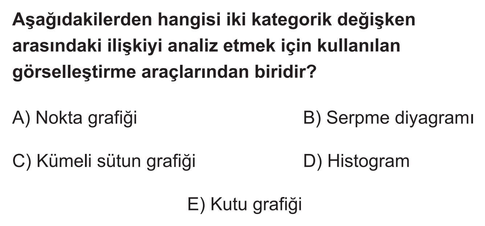
Çözüm
- Nokta grafiği, serpme diyagramı, histogram ve kutu grafiği nicel veriler içindir.
- İki kategorik değişkeni birlikte göstermek için kümeli sütun grafiği kullanılır.
- Cevap C.
Cevap: C
Soru 2Cevap: D
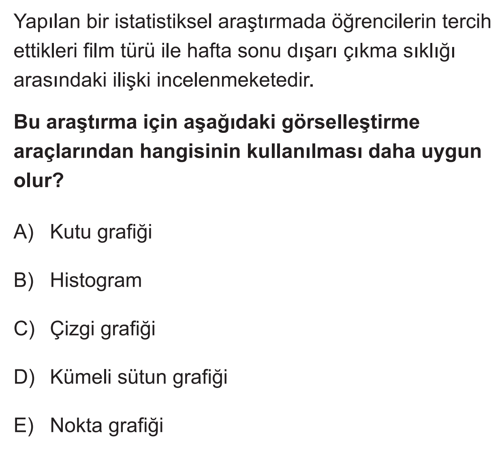
Çözüm
- Film türü (kategorik) ile dışarı çıkma sıklığı (kategorik) incelenmektedir.
- Kutu grafiği, histogram, çizgi ve nokta grafiği nicel veriler içindir.
- İki kategorik değişkeni karşılaştırmak için kümeli sütun grafiği uygundur → D.
Cevap: D
Soru 3Cevap: E
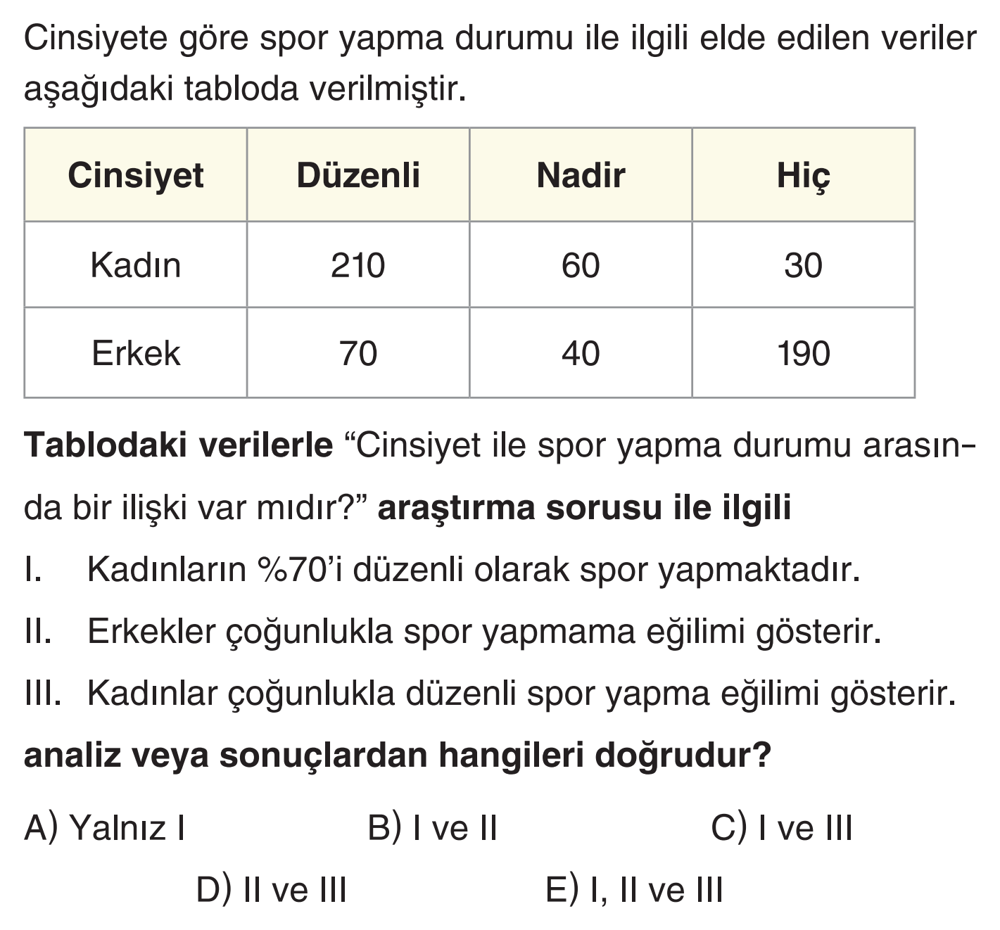
Çözüm
- Kadın toplamı 300: düzenli 210 → 210/300 = %70 (I doğru).
- Erkek toplamı 300: hiç yapmayan 190 → çoğunluk spor yapmıyor (II doğru).
- Kadınların çoğunluğu (%70) düzenli spor yapıyor (III doğru). Cevap E.
Cevap: E
Soru 4Cevap: D
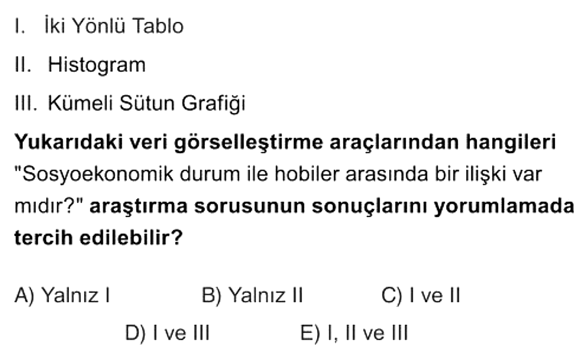
Çözüm
- Sosyoekonomik durum ve hobi iki kategorik değişkendir.
- İki kategorik değişkenin ilişkisi iki yönlü tablo ve kümeli sütun grafiği ile incelenir.
- Histogram nicel veri içindir. Cevap: I ve III.
Cevap: D
Soru 5Cevap: E
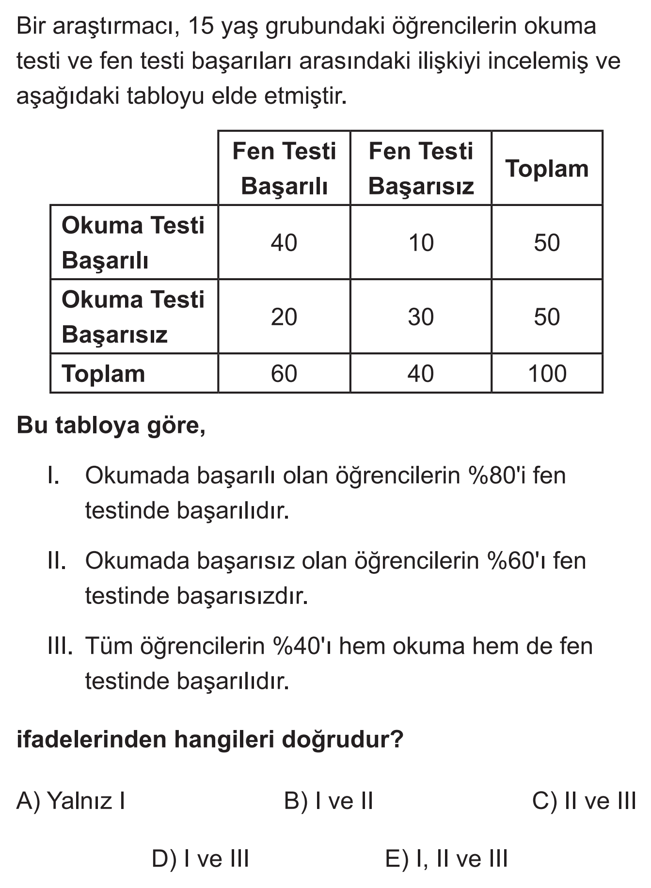
Çözüm
- Okumada başarılı 50 kişiden 40'ı fende başarılı → 40/50 = %80 (I doğru).
- Okumada başarısız 50 kişiden 30'u fende başarısız → %60 (II doğru).
- Her iki testte başarılı 40 kişi, tüm öğrenci 100 → %40 (III doğru). Cevap E.
Cevap: E
Soru 6Cevap: B
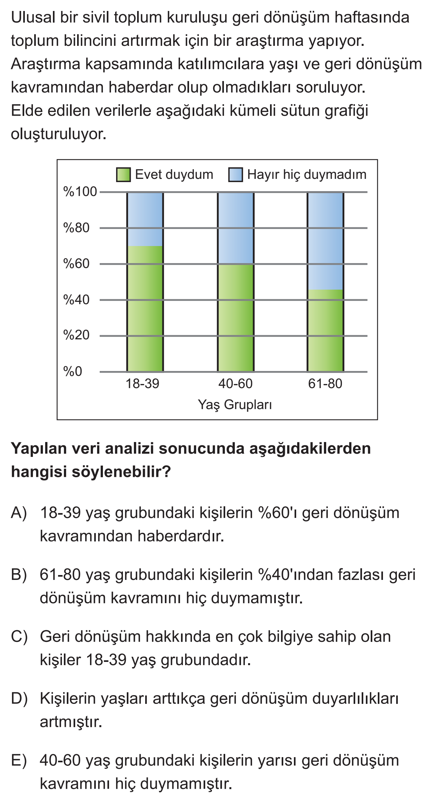
Çözüm
- Grafikte "evet duydum" oranları yaklaşık 18–39: %70, 40–60: %60, 61–80: %45.
- 61–80 yaş grubunda "hiç duymadım" oranı yaklaşık %55 → %40'tan fazla (B doğru).
- A (%60 değil %70), D (yaş arttıkça azalıyor), E (%40 duymamış) yanlış; C bilgi düzeyini ölçmez. Cevap B.
Cevap: B
Soru 7Cevap: B
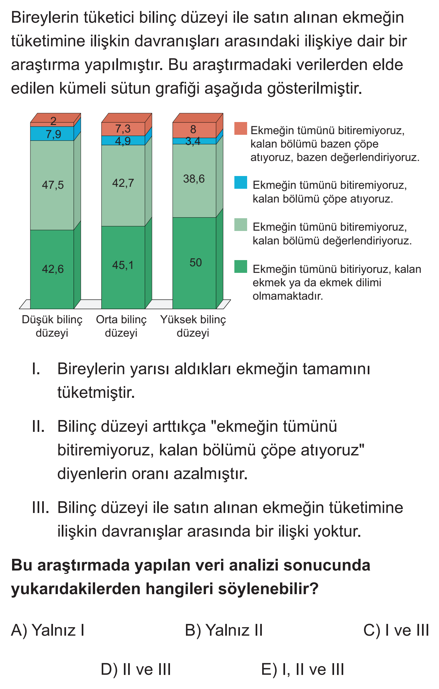
Çözüm
- Ekmeğin tümünü bitirenlerin oranı gruplarda %42,6; %45,1; %50 → genel olarak yarısı değildir (I söylenemez).
- "Bitiremiyoruz, kalanı çöpe atıyoruz" diyenler %7,9 → %4,9 → %3,4 azalmıştır (II doğru).
- Oranlar gruplara göre değiştiği için ilişki yoktur denemez (III yanlış). Cevap: Yalnız II.
Cevap: B
Soru 8Cevap: C
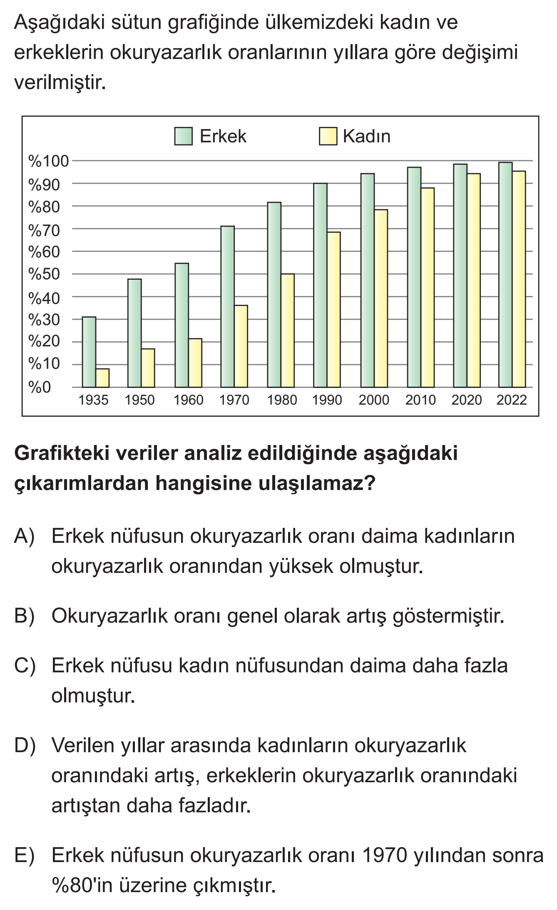
Çözüm
- Grafik oranları gösterir: her yıl erkek oranı kadından yüksek (A), oranlar artmış (B).
- Kadınlarda artış yaklaşık %8 → %95, erkeklerde %31 → %99; kadın artışı daha fazla (D). 1980'den itibaren erkek oranı %80'in üstünde (E).
- Grafikte nüfus sayıları yoktur; erkek nüfusunun kadından fazla olduğuna ulaşılamaz → C.
Cevap: C
Soru 9Cevap: C
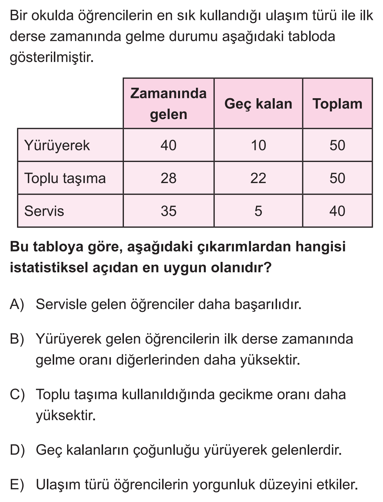
Çözüm
- Zamanında gelme oranları: yürüyerek 40/50 = %80, toplu taşıma 28/50 = %56, servis 35/40 = %87,5.
- Gecikme oranları: yürüyerek %20, toplu taşıma %44, servis %12,5 → en yüksek toplu taşıma (C).
- Başarı ve yorgunluk tabloda yoktur; geç kalanların çoğu toplu taşıma kullanır. Cevap C.
Cevap: C
Soru 10Cevap: D
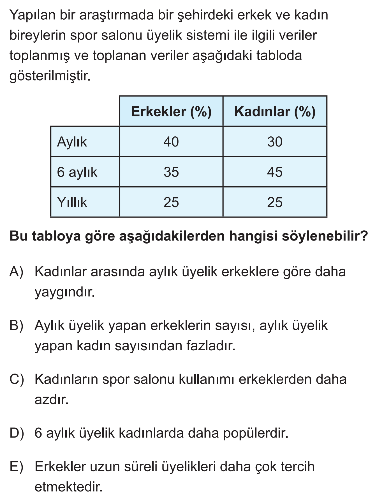
Çözüm
- Tablo yüzdelerdir; kişi sayıları bilinmediğinden sayı karşılaştırması (B, C) yapılamaz.
- Kadınlarda aylık %30 < erkeklerde %40 (A yanlış); erkeklerde yıllık %25 en düşük (E yanlış).
- Kadınlarda en yüksek oran 6 aylık (%45) → 6 aylık kadınlarda daha popüler (D).
Cevap: D
Soru 11Cevap: E
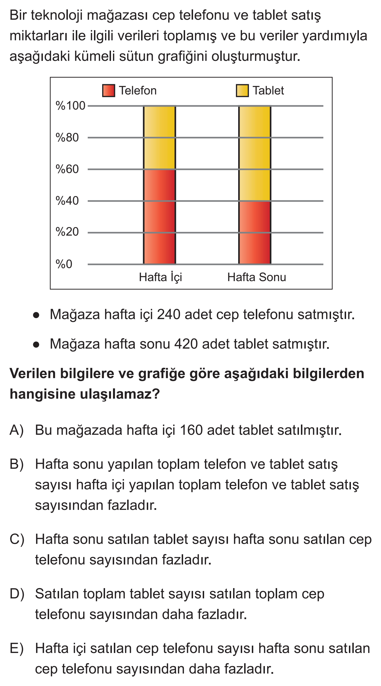
Çözüm
- Hafta içi telefon %60 = 240 → toplam 400, tablet 160 (A). Hafta sonu tablet %60 = 420 → toplam 700, telefon 280.
- Hafta sonu toplamı 700 > 400 (B); hafta sonu tablet 420 > telefon 280 (C); toplam tablet 580 > telefon 520 (D).
- Hafta içi telefon 240 < hafta sonu 280 → E'ye ulaşılamaz.
Cevap: E
Soru 12Cevap: E
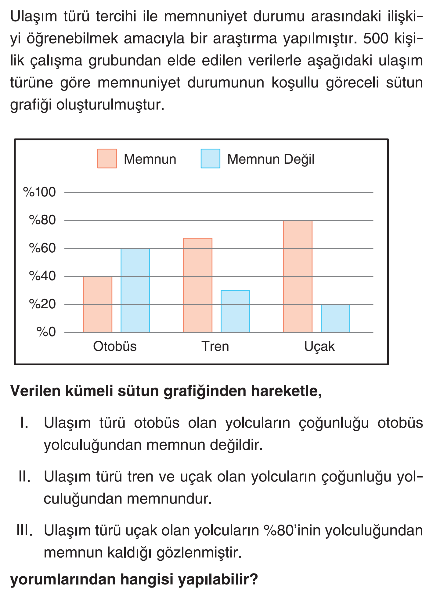
A)Yalnız IB)I ve IIC)I ve IIID)II ve IIIE)I, II ve III
Çözüm
- Grafik ulaşım türüne göre memnuniyetin koşullu göreli sıklıklarıdır: otobüs %40–%60, tren yaklaşık %67–%33, uçak %80–%20.
- Otobüste memnun olmayanlar çoğunluktadır (I); tren ve uçakta memnunlar çoğunluktadır (II).
- Uçak yolcularının %80'i memnundur (III). Cevap: I, II ve III.
Cevap: E
Soru 13Cevap: D
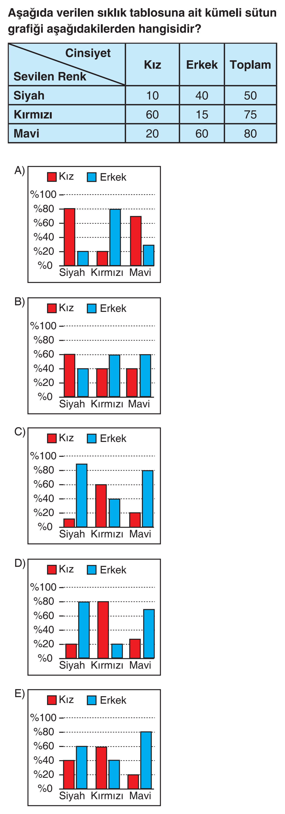
Çözüm
- Renklere göre cinsiyet oranları: siyah 10/50 = %20 kız, %80 erkek.
- Kırmızı 60/75 = %80 kız, %20 erkek; mavi 20/80 = %25 kız, %75 erkek.
- Bu oranları gösteren kümeli sütun grafiği D'dir.
Cevap: D
Soru 14Cevap: D
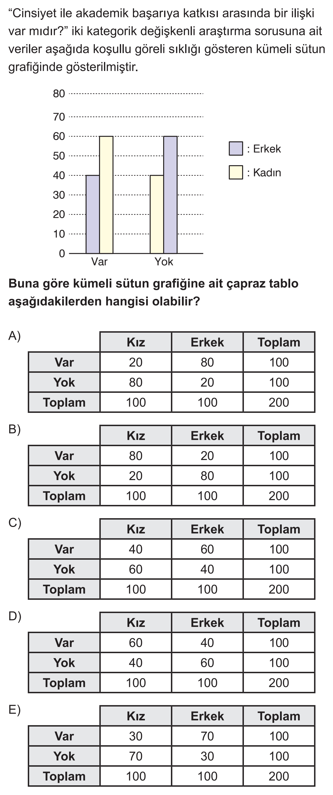
Çözüm
- Grafik: "Var" grubunda erkek %40, kadın %60; "Yok" grubunda kadın %40, erkek %60.
- Çapraz tabloda her satır (var/yok) içinde kız–erkek oranları bu değerleri vermelidir.
- Var: 60 kız, 40 erkek; Yok: 40 kız, 60 erkek → D.
Cevap: D
Soru 15Cevap: C
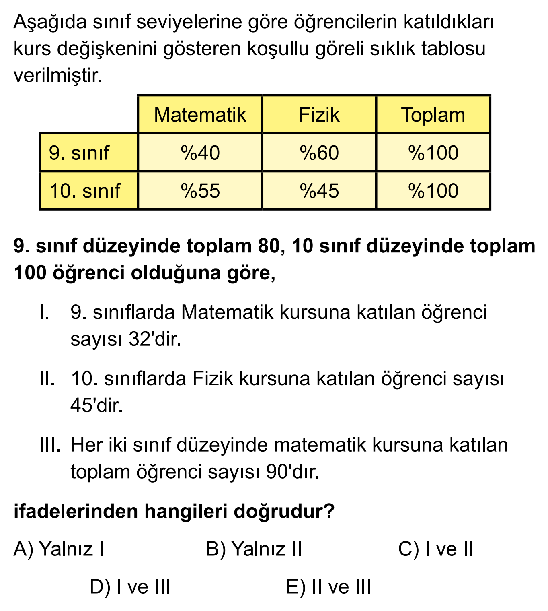
Çözüm
- 9. sınıf toplam 80: matematik %40 → 32, fizik %60 → 48. 10. sınıf toplam 100: matematik %55 → 55, fizik %45 → 45.
- 9. sınıf matematik 32 (I doğru); 10. sınıf fizik 45 (II doğru).
- Matematik toplamı 32 + 55 = 87 ≠ 90 (III yanlış). Cevap: I ve II.
Cevap: C
Soru 16Cevap: D
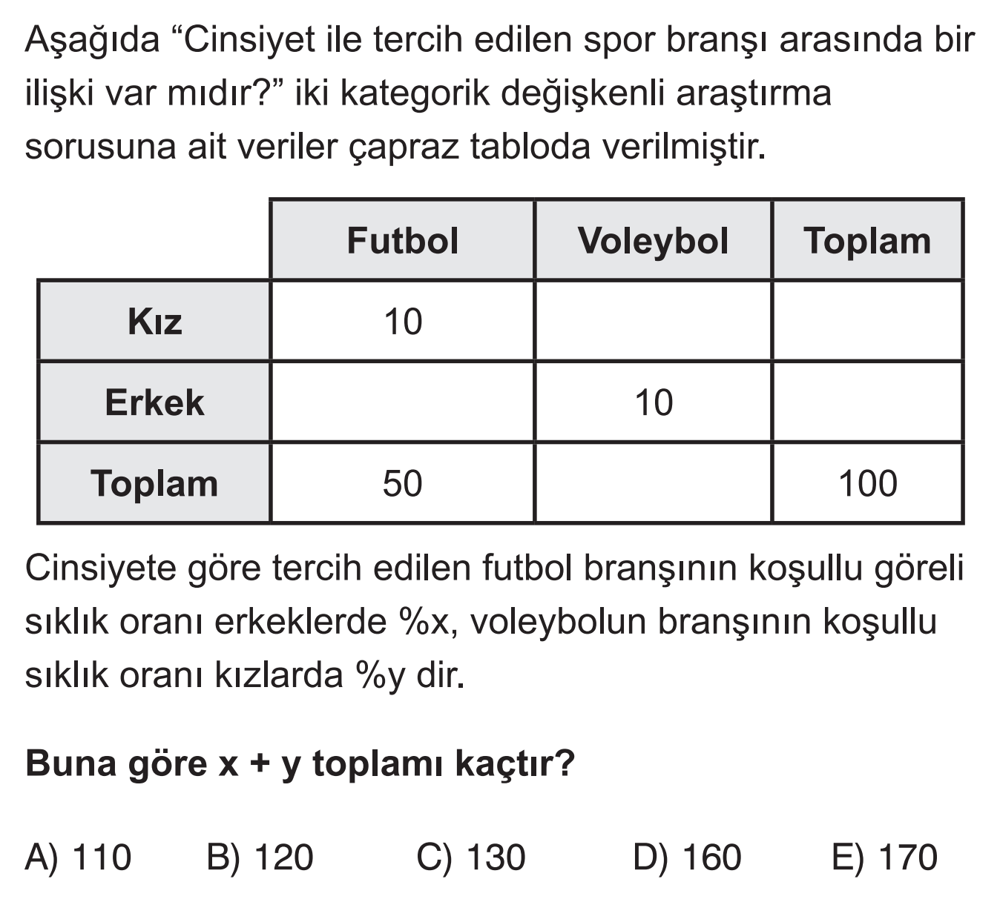
Çözüm
- Erkek futbol = 50 − 10 = 40; erkek toplam 40 + 10 = 50; kız toplam 100 − 50 = 50; kız voleybol 40.
- x = erkeklerde futbol oranı = 40/50 = %80; y = kızlarda voleybol oranı = 40/50 = %80.
- x + y = 160 → D.
Cevap: D
Soru 17Cevap: D
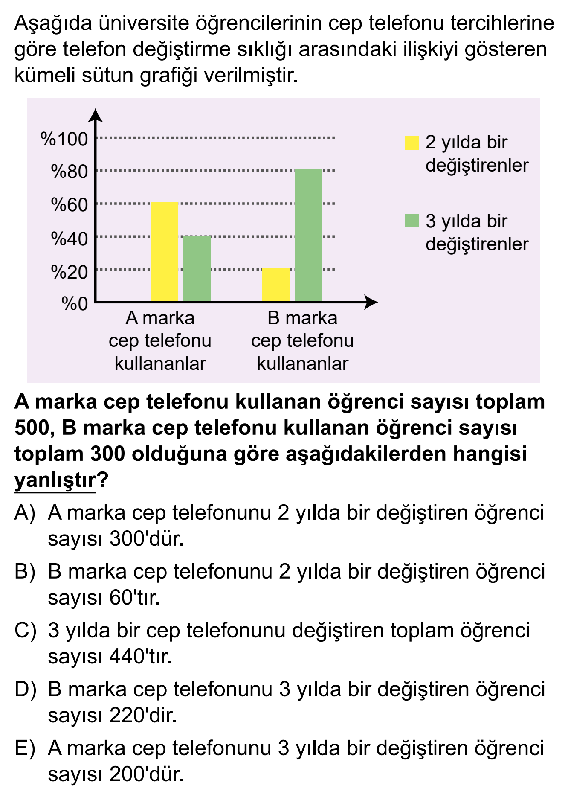
Çözüm
- A marka 500 kişi: 2 yılda %60 → 300, 3 yılda %40 → 200.
- B marka 300 kişi: 2 yılda %20 → 60, 3 yılda %80 → 240; 3 yılda toplam 200 + 240 = 440.
- B markada 3 yılda bir değiştiren 220 değil 240'tır → D yanlış.
Cevap: D
Soru 18Cevap: C
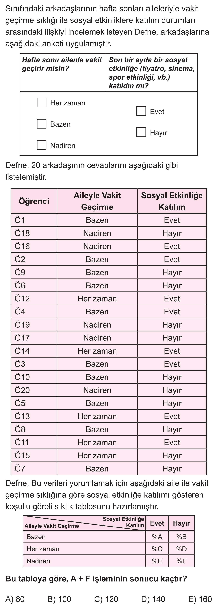
Çözüm
- Listeden sayım: "Bazen" 10 kişi (4 evet, 6 hayır); "Her zaman" 5 kişi; "Nadiren" 5 kişi (1 evet, 4 hayır).
- A = 4/10 = %40, F = 4/5 = %80.
- A + F = 40 + 80 = 120 → C.
Cevap: C
Soru 19Cevap: D
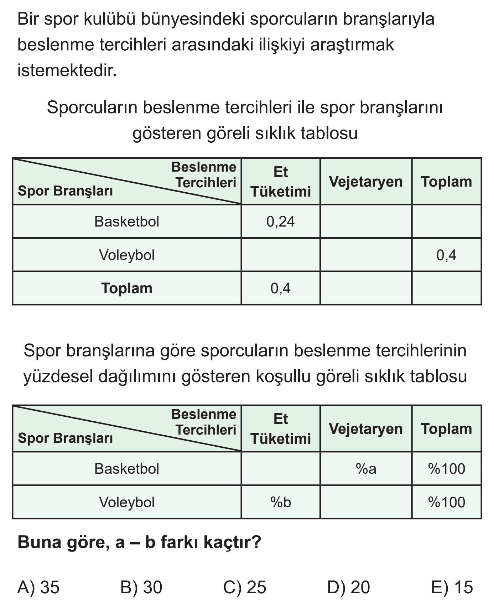
Çözüm
- Voleybol toplamı 0,4 → basketbol toplamı 0,6. Basketbol vejetaryen 0,6 − 0,24 = 0,36; voleybol et 0,4 − 0,24 = 0,16.
- a = 0,36/0,6 = %60; b = 0,16/0,4 = %40.
- a − b = 60 − 40 = 20 → D.
Cevap: D
Soru 20Cevap: E
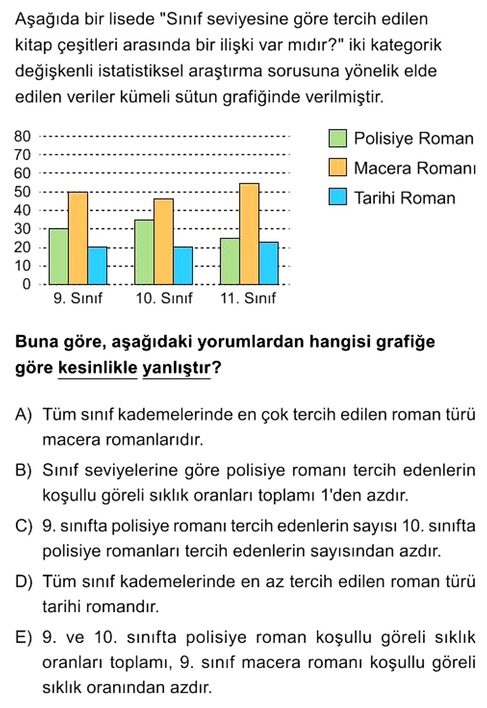
Çözüm
- Koşullu göreli sıklıklar (yaklaşık): 9. sınıf P 30, M 50, T 20; 10. sınıf P 35, M 45, T 20; 11. sınıf P 25, M 55, T 20.
- A, B ve D grafikten doğrulanır; kişi sayıları bilinmediğinden C hakkında kesin yargı verilemez.
- 9. ve 10. sınıf polisiye oranları toplamı 30 + 35 = 65 > 9. sınıf macera oranı 50 → E kesinlikle yanlış.
Cevap: E
Soru 21Cevap: D
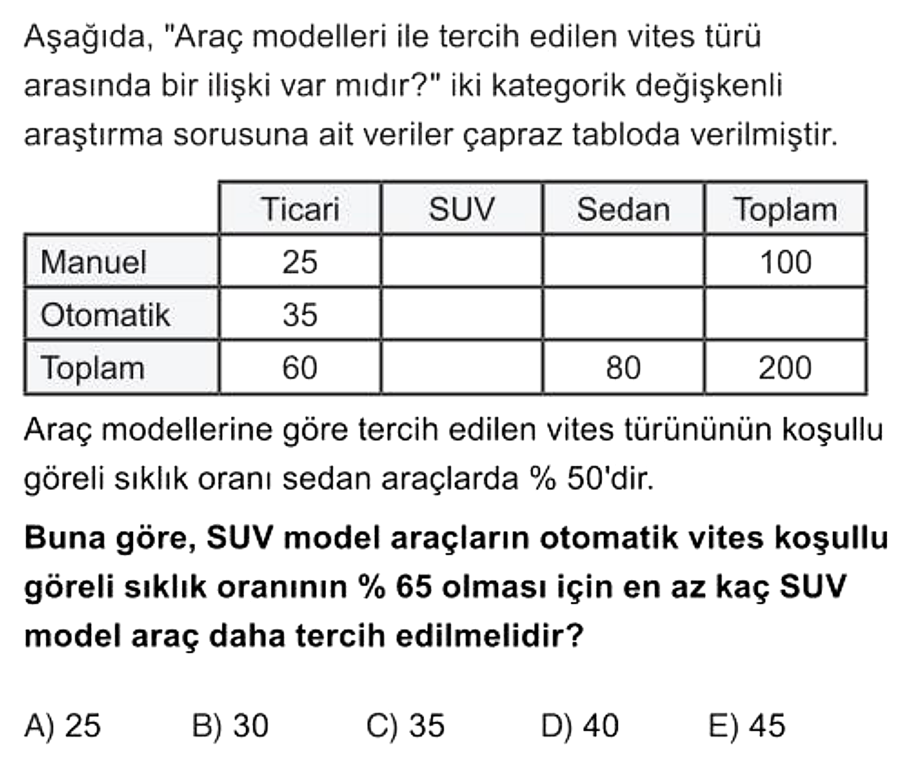
Çözüm
- Sedan 80 araçta vites oranı %50 → 40 manuel, 40 otomatik. SUV toplamı 200 − 60 − 80 = 60.
- Manuel SUV = 100 − 25 − 40 = 35, otomatik SUV = 25.
- k SUV otomatik eklensin: (25 + k)/(60 + k) = 0,65 → 0,35k = 14 → k = 40 → D.
Cevap: D
Soru 22Cevap: E
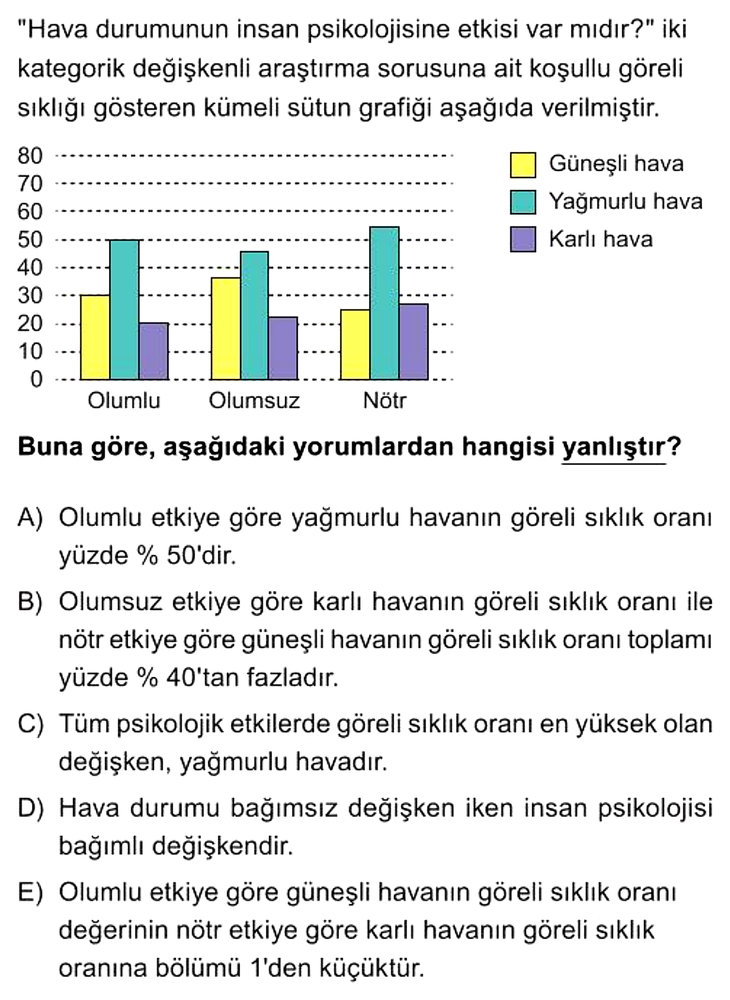
Çözüm
- Grafik (yaklaşık): olumlu G 30, Y 50, K 20; olumsuz G 37, Y 45, K 22; nötr G 25, Y 55, K 27.
- A (%50), B (olumsuz–karlı 22 + nötr–güneşli 25 = 47 > 40), C (her grupta en yüksek yağmurlu), D (hava bağımsız, psikoloji bağımlı) doğrudur.
- Olumlu–güneşli %30 ÷ nötr–karlı %27 > 1 olduğundan E yanlıştır.
Cevap: E
Soru 23Cevap: E
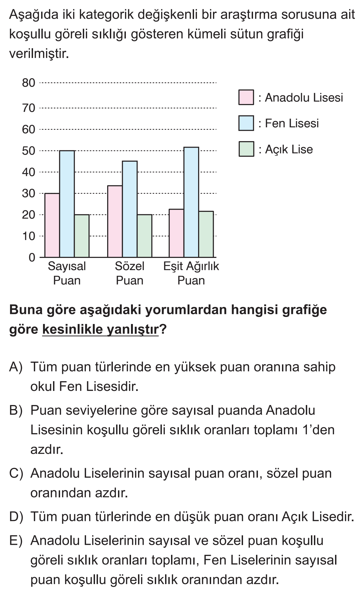
Çözüm
- Grafik (yaklaşık): Anadolu 30, 33, 22; Fen 50, 45, 52; Açık 20, 20, 21.
- A, B, C ve D grafikle uyumludur.
- Anadolu sayısal + sözel = 30 + 33 = 63 > Fen sayısal 50 → E kesinlikle yanlış.
Cevap: E
Soru 24Cevap: D
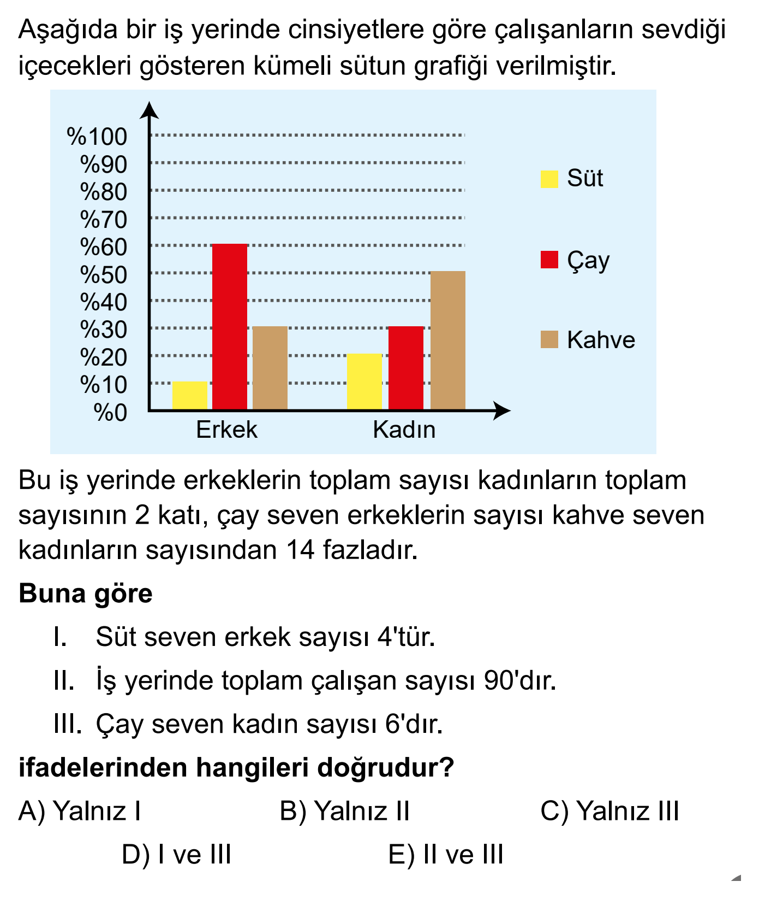
Çözüm
- Oranlar: erkek süt %10, çay %60, kahve %30; kadın süt %20, çay %30, kahve %50. Kadın = K, erkek = 2K.
- Çay seven erkek = kahve seven kadın + 14 → 0,6·2K = 0,5K + 14 → K = 20, erkek 40.
- Süt seven erkek 4 (I doğru), toplam 60 (II yanlış), çay seven kadın 6 (III doğru). Cevap: I ve III.
Cevap: D